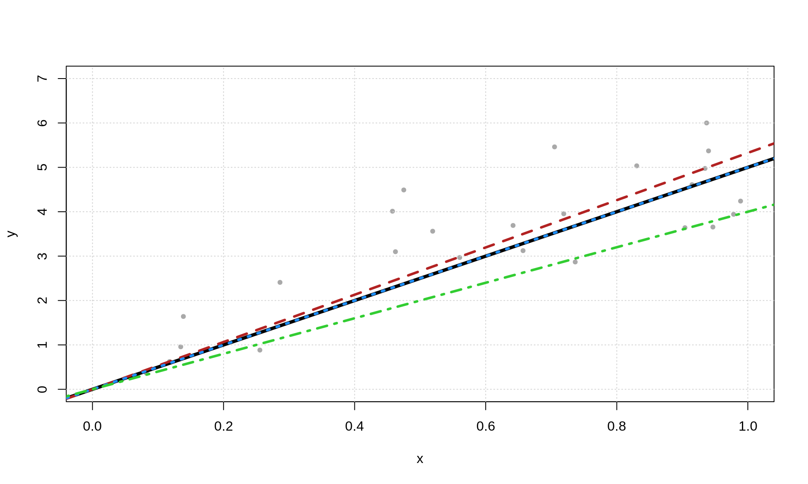
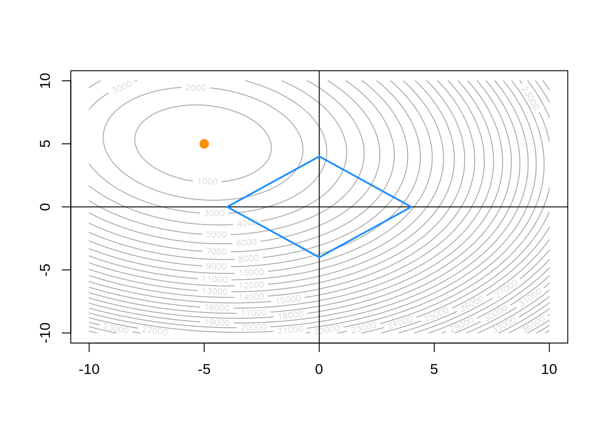
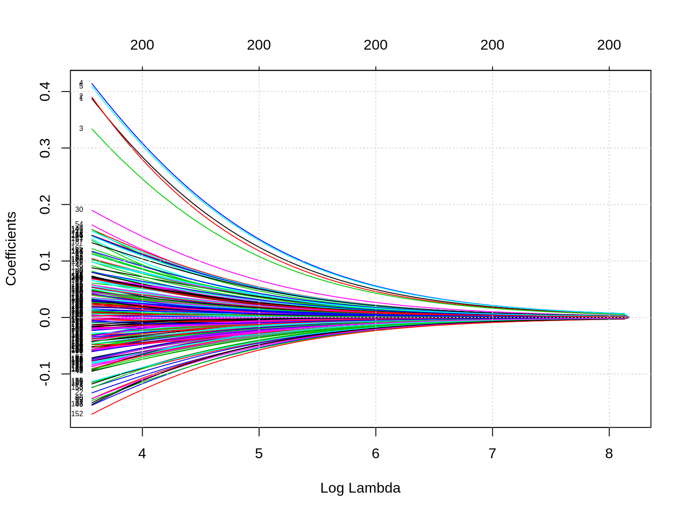
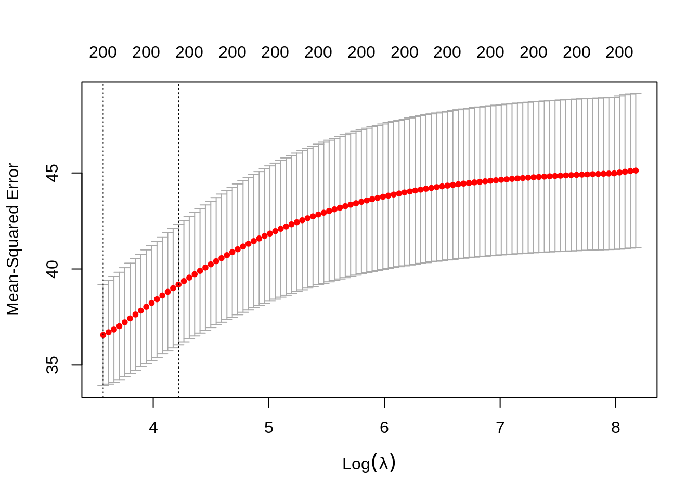
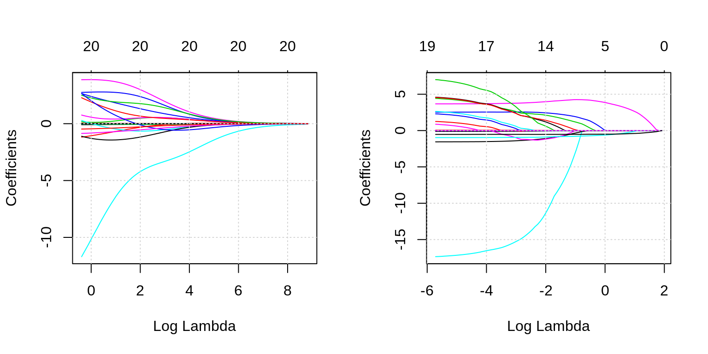
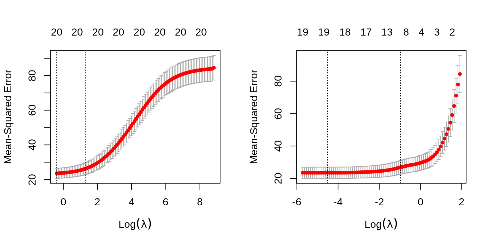
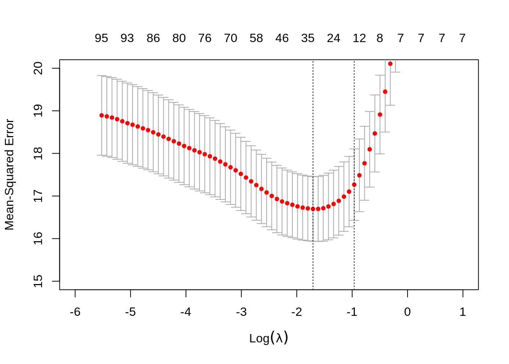

Chapter 14 Regularization
14.1 STAT 432 Materials
- ISL Readings: Sections 6.1 - 6.4
14.2 Reducing Variance with Added Bias
gen_simple_data = function(sample_size = 25) {
x = runif(n = sample_size)
y = 0 + 5 * x + rnorm(n = sample_size)
data.frame(x, y)
}# fit least squares
beta_ls = lm(y ~ 0 + x, data = simple_data)
# fit a biased model
# restrict beta-hat to be at most 5
beta_05 = lm(y ~ 0 + x, data = simple_data)
beta_05$coefficients = min(beta_05$coefficients, 5)
# fit a biased model
# restrict beta-hat to be at most 4
beta_04 = lm(y ~ 0 + x, data = simple_data)
beta_04$coefficients = min(beta_04$coefficients, 4)## [1] 5.325953 5.000000 4.000000
# maybe write a function for each
# should switch this to make each model fit to the same data
set.seed(42)
beta_estimates = list(
beta_ls = replicate(n = 5000, coef(lm(y ~ 0 + x, data = gen_simple_data()))["x"]),
beta_05 = replicate(n = 5000, min(coef(lm(y ~ 0 + x, data = gen_simple_data()))["x"], 5)),
beta_04 = replicate(n = 5000, min(coef(lm(y ~ 0 + x, data = gen_simple_data()))["x"], 4))
)| Model | Bias | Variance | MSE |
|---|---|---|---|
| Least Squares | -0.003 | 0.13 | 0.130 |
| Biased to 5 | -0.134 | 0.04 | 0.058 |
| Biased to 4 | -1.000 | 0.00 | 1.001 |
14.3 scaling matters?
another_dgp = function(sample_size = 25) {
x = runif(n = sample_size)
y = -2 + 5 * x + rnorm(n = sample_size)
tibble(x, y)
}## 1 2 3 4 5 6 7
## -1.3821582 -1.9123198 2.3840155 -1.9167476 2.6436459 -0.0673255 -0.2236885
## 8 9 10 11 12 13 14
## 2.4778373 1.1021074 1.6899061 0.2489363 -0.7390997 3.4760505 0.4906860
## 15 16 17 18 19 20 21
## -0.9683105 0.4202554 1.7825769 -0.2720839 0.9580110 1.1225404 2.9943423
## 22 23 24 25
## 3.7554539 1.2570305 -0.9414314 2.3061219## (Intercept) x
## -2.229674 6.287082## 1 2 3 4 5 6 7
## -1.3821582 -1.9123198 2.3840155 -1.9167476 2.6436459 -0.0673255 -0.2236885
## 8 9 10 11 12 13 14
## 2.4778373 1.1021074 1.6899061 0.2489363 -0.7390997 3.4760505 0.4906860
## 15 16 17 18 19 20 21
## -0.9683105 0.4202554 1.7825769 -0.2720839 0.9580110 1.1225404 2.9943423
## 22 23 24 25
## 3.7554539 1.2570305 -0.9414314 2.3061219## (Intercept) x
## 0.8274541 1.650645214.4 Constraints in Two Dimensions
gen_linear_data = function() {
x1 = rnorm(100)
x2 = rnorm(100)
y = 0 + -5 * x1 + 5 * x2 + rnorm(100)
tibble(x1 = x1, x2 = x2, y = y)
}data = gen_linear_data()
beta = expand.grid(beta_1 = seq(-10, 10, 0.1),
beta_2 = seq(-10, 10, 0.1))
beta_error = rep(0, dim(beta)[1])
for (i in 1:dim(beta)[1]){
beta_error[i] = with(data, sum((y - (beta$beta_1[i] * x1 + beta$beta_2[i] * x2)) ^ 2 ))
}# TODO: make this into a function
# TODO: add ridge constraint
contour(x = seq(-10, 10, 0.1),
y = seq(-10, 10, 0.1),
z = matrix(beta_error,
nrow = length(seq(-10, 10, 0.1)),
ncol = length(seq(-10, 10, 0.1))),
nlevels = 50,
col = "darkgrey"
)
abline(h = 0)
abline(v = 0)
a = 4
segments(0, a, a, 0, col = "dodgerblue", lwd = 2)
segments(0, -a, a, 0, col = "dodgerblue", lwd = 2)
segments(-a, 0, 0, a, col = "dodgerblue", lwd = 2)
segments(-a, 0, 0, -a, col = "dodgerblue", lwd = 2)
points(beta[which.min(beta_error), ], col = "darkorange", pch = 20, cex = 2)
14.5 High Dimensional Data
gen_wide_data = function(sample_size = 100, sig_betas = 5, p = 200) {
if (p <= sample_size) {
warning("You're not generating wide data, despite the name of the function.")
}
if (sig_betas > p) {
stop("Cannot have more significant variables than variables!")
}
x = map_dfc(1:p, ~ rnorm(n = sample_size))
x = x %>% rename_all( ~ str_replace(., "V", "x"))
sig_x = x[, 1:sig_betas]
beta = rep(3, times = sig_betas)
y = as.matrix(sig_x) %*% beta + rnorm(n = sample_size)
bind_cols(y = y, x)
}## # A tibble: 100 x 201
## y[,1] x1 x2 x3 x4 x5 x6 x7 x8 x9
## <dbl> <dbl> <dbl> <dbl> <dbl> <dbl> <dbl> <dbl> <dbl> <dbl>
## 1 5.00 1.75 -0.449 1.09 -0.981 0.217 -0.390 1.13 1.83 -0.989
## 2 -7.81 -0.792 -0.659 -0.823 -0.275 0.281 0.931 0.680 0.354 0.628
## 3 4.29 0.648 0.533 -0.415 1.19 -0.451 0.914 0.953 0.527 0.529
## 4 7.22 1.06 0.913 0.0341 0.793 -0.522 0.680 -0.124 1.74 0.955
## 5 -2.09 -0.603 -0.594 -0.141 0.897 0.162 -0.0729 -0.550 2.81 1.71
## 6 -6.24 0.461 -0.996 -1.25 -0.386 -0.175 -0.153 -0.914 0.230 0.624
## 7 10.2 1.45 1.60 0.426 0.0269 0.318 0.0255 -2.15 0.669 -0.178
## 8 2.42 0.576 0.757 0.537 -0.828 -0.348 -0.640 2.25 0.942 1.10
## 9 -0.0202 -0.287 0.276 -0.550 0.537 -0.0493 1.42 -0.558 -0.283 0.489
## 10 1.49 0.563 -0.264 0.0107 0.00393 -0.367 1.75 -0.893 1.75 1.08
## # … with 90 more rows, and 191 more variables: x10 <dbl>, x11 <dbl>, x12 <dbl>,
## # x13 <dbl>, x14 <dbl>, x15 <dbl>, x16 <dbl>, x17 <dbl>, x18 <dbl>,
## # x19 <dbl>, x20 <dbl>, x21 <dbl>, x22 <dbl>, x23 <dbl>, x24 <dbl>,
## # x25 <dbl>, x26 <dbl>, x27 <dbl>, x28 <dbl>, x29 <dbl>, x30 <dbl>,
## # x31 <dbl>, x32 <dbl>, x33 <dbl>, x34 <dbl>, x35 <dbl>, x36 <dbl>,
## # x37 <dbl>, x38 <dbl>, x39 <dbl>, x40 <dbl>, x41 <dbl>, x42 <dbl>,
## # x43 <dbl>, x44 <dbl>, x45 <dbl>, x46 <dbl>, x47 <dbl>, x48 <dbl>,
## # x49 <dbl>, x50 <dbl>, x51 <dbl>, x52 <dbl>, x53 <dbl>, x54 <dbl>,
## # x55 <dbl>, x56 <dbl>, x57 <dbl>, x58 <dbl>, x59 <dbl>, x60 <dbl>,
## # x61 <dbl>, x62 <dbl>, x63 <dbl>, x64 <dbl>, x65 <dbl>, x66 <dbl>,
## # x67 <dbl>, x68 <dbl>, x69 <dbl>, x70 <dbl>, x71 <dbl>, x72 <dbl>,
## # x73 <dbl>, x74 <dbl>, x75 <dbl>, x76 <dbl>, x77 <dbl>, x78 <dbl>,
## # x79 <dbl>, x80 <dbl>, x81 <dbl>, x82 <dbl>, x83 <dbl>, x84 <dbl>,
## # x85 <dbl>, x86 <dbl>, x87 <dbl>, x88 <dbl>, x89 <dbl>, x90 <dbl>,
## # x91 <dbl>, x92 <dbl>, x93 <dbl>, x94 <dbl>, x95 <dbl>, x96 <dbl>,
## # x97 <dbl>, x98 <dbl>, x99 <dbl>, x100 <dbl>, x101 <dbl>, x102 <dbl>,
## # x103 <dbl>, x104 <dbl>, x105 <dbl>, x106 <dbl>, x107 <dbl>, x108 <dbl>,
## # x109 <dbl>, …14.6 Ridge Regression
\[ \sum_{i=1}^{n} \left( y_i - \beta_0 - \sum_{j=1}^{p} \beta_j x_{ij} \right) ^ 2 + \lambda \sum_{j=1}^{p} \beta_j^2 . \]

## # A tibble: 5 x 100
## s0 s1 s2 s3 s4 s5 s6 s7 s8 s9 s10
## <dbl> <dbl> <dbl> <dbl> <dbl> <dbl> <dbl> <dbl> <dbl> <dbl> <dbl>
## 1 -0.407 -0.357 -0.354 -0.352 -0.349 -0.346 -0.344 -0.341 -0.337 -0.334 -0.331
## 2 -0.407 -0.400 -0.400 -0.400 -0.399 -0.399 -0.398 -0.398 -0.398 -0.397 -0.397
## 3 -0.407 -0.361 -0.359 -0.356 -0.354 -0.352 -0.349 -0.346 -0.343 -0.340 -0.337
## 4 -0.407 -0.322 -0.318 -0.314 -0.310 -0.305 -0.301 -0.295 -0.290 -0.285 -0.279
## 5 -0.407 -0.441 -0.442 -0.444 -0.446 -0.447 -0.449 -0.451 -0.453 -0.456 -0.458
## # … with 89 more variables: s11 <dbl>, s12 <dbl>, s13 <dbl>, s14 <dbl>,
## # s15 <dbl>, s16 <dbl>, s17 <dbl>, s18 <dbl>, s19 <dbl>, s20 <dbl>,
## # s21 <dbl>, s22 <dbl>, s23 <dbl>, s24 <dbl>, s25 <dbl>, s26 <dbl>,
## # s27 <dbl>, s28 <dbl>, s29 <dbl>, s30 <dbl>, s31 <dbl>, s32 <dbl>,
## # s33 <dbl>, s34 <dbl>, s35 <dbl>, s36 <dbl>, s37 <dbl>, s38 <dbl>,
## # s39 <dbl>, s40 <dbl>, s41 <dbl>, s42 <dbl>, s43 <dbl>, s44 <dbl>,
## # s45 <dbl>, s46 <dbl>, s47 <dbl>, s48 <dbl>, s49 <dbl>, s50 <dbl>,
## # s51 <dbl>, s52 <dbl>, s53 <dbl>, s54 <dbl>, s55 <dbl>, s56 <dbl>,
## # s57 <dbl>, s58 <dbl>, s59 <dbl>, s60 <dbl>, s61 <dbl>, s62 <dbl>,
## # s63 <dbl>, s64 <dbl>, s65 <dbl>, s66 <dbl>, s67 <dbl>, s68 <dbl>,
## # s69 <dbl>, s70 <dbl>, s71 <dbl>, s72 <dbl>, s73 <dbl>, s74 <dbl>,
## # s75 <dbl>, s76 <dbl>, s77 <dbl>, s78 <dbl>, s79 <dbl>, s80 <dbl>,
## # s81 <dbl>, s82 <dbl>, s83 <dbl>, s84 <dbl>, s85 <dbl>, s86 <dbl>,
## # s87 <dbl>, s88 <dbl>, s89 <dbl>, s90 <dbl>, s91 <dbl>, s92 <dbl>,
## # s93 <dbl>, s94 <dbl>, s95 <dbl>, s96 <dbl>, s97 <dbl>, s98 <dbl>, s99 <dbl>## # A tibble: 1 x 2
## lambda.min lambda.1se
## <dbl> <dbl>
## 1 35.4 67.9
## # A tibble: 100 x 6
## lambda estimate std.error conf.low conf.high nzero
## <dbl> <dbl> <dbl> <dbl> <dbl> <int>
## 1 3543. 45.1 4.01 41.1 49.1 200
## 2 3382. 45.1 4.02 41.1 49.1 200
## 3 3228. 45.1 4.01 41.1 49.1 200
## 4 3081. 45.0 3.99 41.0 49.0 200
## 5 2941. 45.0 3.96 41.0 48.9 200
## 6 2808. 45.0 3.96 41.0 48.9 200
## 7 2680. 45.0 3.95 41.0 48.9 200
## 8 2558. 44.9 3.95 41.0 48.9 200
## 9 2442. 44.9 3.95 41.0 48.9 200
## 10 2331. 44.9 3.95 41.0 48.9 200
## # … with 90 more rows14.7 Lasso
14.8 boston is boring
## [1] "0" "1"## [1] "1" "2" "3" "4" "5" "6" "7" "8" "24"##
## Call:
## lm(formula = medv ~ ., data = bstn)
##
## Coefficients:
## (Intercept) crim zn indus chas1 nox
## 35.259615 -0.108821 0.054896 0.023760 2.524163 -17.573132
## rm age dis rad2 rad3 rad4
## 3.665491 0.000461 -1.554546 1.488905 4.681253 2.576234
## rad5 rad6 rad7 rad8 rad24 tax
## 2.918493 1.185839 4.878992 4.839836 7.461674 -0.008748
## ptratio black lstat
## -0.972419 0.009394 -0.529226## # A tibble: 6 x 21
## `(Intercept)` crim zn indus chas1 nox rm age dis rad2 rad3
## <dbl> <dbl> <dbl> <dbl> <dbl> <dbl> <dbl> <dbl> <dbl> <dbl> <dbl>
## 1 1 0.00632 18 2.31 0 0.538 6.58 65.2 4.09 0 0
## 2 1 0.0273 0 7.07 0 0.469 6.42 78.9 4.97 1 0
## 3 1 0.0273 0 7.07 0 0.469 7.18 61.1 4.97 1 0
## 4 1 0.0324 0 2.18 0 0.458 7.00 45.8 6.06 0 1
## 5 1 0.0690 0 2.18 0 0.458 7.15 54.2 6.06 0 1
## 6 1 0.0298 0 2.18 0 0.458 6.43 58.7 6.06 0 1
## # … with 10 more variables: rad4 <dbl>, rad5 <dbl>, rad6 <dbl>, rad7 <dbl>,
## # rad8 <dbl>, rad24 <dbl>, tax <dbl>, ptratio <dbl>, black <dbl>, lstat <dbl>## (Intercept) crim zn indus chas1
## 3.525962e+01 -1.088210e-01 5.489638e-02 2.376030e-02 2.524163e+00
## nox rm age dis rad2
## -1.757313e+01 3.665491e+00 4.610055e-04 -1.554546e+00 1.488905e+00
## rad3 rad4 rad5 rad6 rad7
## 4.681253e+00 2.576234e+00 2.918493e+00 1.185839e+00 4.878992e+00
## rad8 rad24 tax ptratio black
## 4.839836e+00 7.461674e+00 -8.748175e-03 -9.724194e-01 9.393803e-03
## lstat
## -5.292258e-01par(mfrow = c(1, 2))
plot(glmnet(x = bstn_x, y = bstn_y, alpha = 0), xvar = "lambda")
grid()
plot(glmnet(x = bstn_x, y = bstn_y, alpha = 1), xvar = "lambda")
grid()
par(mfrow = c(1, 2))
plot(cv.glmnet(x = bstn_x, y = bstn_y, alpha = 0))
plot(cv.glmnet(x = bstn_x, y = bstn_y, alpha = 1))
bstn_ridge = cv.glmnet(x = bstn_x, y = bstn_y, alpha = 0)
bstn_lasso = cv.glmnet(x = bstn_x, y = bstn_y, alpha = 1)## # A tibble: 83 x 6
## lambda estimate std.error conf.low conf.high nzero
## <dbl> <dbl> <dbl> <dbl> <dbl> <int>
## 1 6.78 84.3 8.10 76.2 92.4 0
## 2 6.18 77.2 7.94 69.2 85.1 1
## 3 5.63 70.4 7.51 62.9 77.9 2
## 4 5.13 64.0 7.06 57.0 71.1 2
## 5 4.67 58.5 6.59 51.9 65.0 2
## 6 4.26 53.8 6.17 47.6 60.0 2
## 7 3.88 49.9 5.82 44.1 55.8 2
## 8 3.53 46.7 5.53 41.2 52.3 2
## 9 3.22 44.1 5.28 38.8 49.3 2
## 10 2.93 41.6 5.08 36.5 46.7 3
## # … with 73 more rows## # A tibble: 1 x 2
## lambda.min lambda.1se
## <dbl> <dbl>
## 1 0.00694 0.315## 1
## 1 30.39658
## 2 25.38272
## 3 31.23894
## 4 31.17211
## 5 30.57321
## 6 27.58938
## 7 23.54446
## 8 20.54428
## 9 12.51911
## 10 20.51929## 1
## 1 30.39658
## 2 25.38272
## 3 31.23894
## 4 31.17211
## 5 30.57321
## 6 27.58938
## 7 23.54446
## 8 20.54428
## 9 12.51911
## 10 20.51929## 21 x 1 sparse Matrix of class "dgCMatrix"
## 1
## (Intercept) 19.386070871
## crim -0.027179560
## zn 0.004205338
## indus .
## chas1 2.033274012
## nox -4.744669654
## rm 4.223773143
## age .
## dis -0.485529479
## rad2 .
## rad3 1.353021994
## rad4 .
## rad5 .
## rad6 -0.286318856
## rad7 .
## rad8 0.336943107
## rad24 .
## tax .
## ptratio -0.810303776
## black 0.006775041
## lstat -0.519927242## X1
## 1 1
## 2 2
## 3 4
## 4 5
## 5 6
## 6 8
## 7 10
## 8 13
## 9 15
## 10 18
## 11 19
## 12 2014.9 some more simulation
p = 100
A = matrix(runif(p ^ 2) * 2 - 1, ncol = p)
Sigma = t(A) %*% A
sample_size = 500
X = MASS::mvrnorm(n = sample_size, mu = rep(0, p), Sigma = Sigma)
beta = ifelse(sample(c(0, 0, 0, 0, 0, 0, 0, 0, 0, 0, 0, 0, 1), size = p, replace = TRUE), runif(n = p, -1, 1), 0) * 2
y = X %*% beta + rnorm(n = sample_size, sd = 4)
fit = glmnet::cv.glmnet(x = X, y = y, alpha = 1)
sqrt(min(fit$cvm))## [1] 4.086107
- TODO: Least Absolute Shrinkage and Selection Operator
- TODO: https://statisticaloddsandends.wordpress.com/2018/11/15/a-deep-dive-into-glmnet-standardize/
- TODO: https://www.jaredlander.com/2018/02/using-coefplot-with-glmnet/
- TODO: statistical learning with sparsity book